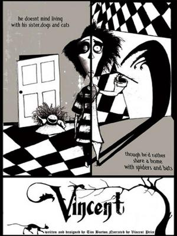
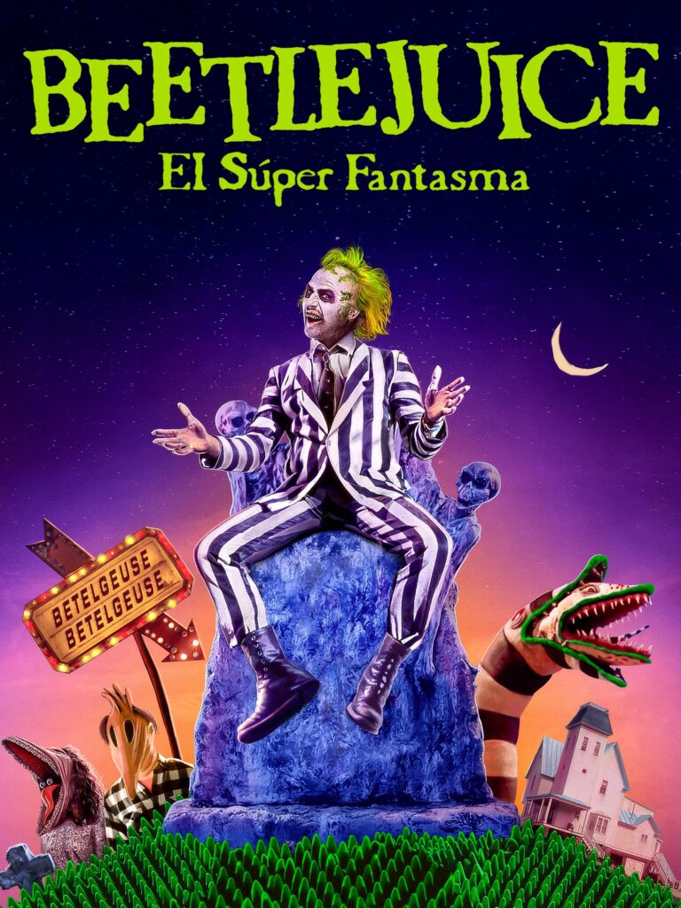
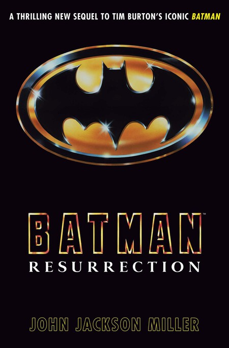
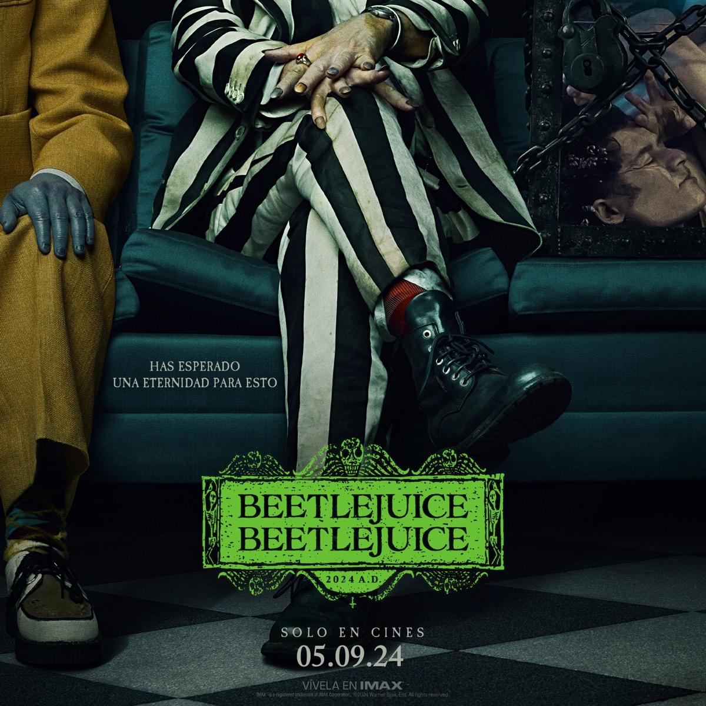

Sus Obras
-
Vincent (1982)
Corto de animación en stop motion en blanco y negro que sigue a Vincent Malloy, un niño obsesionado con el actor Vincent Price y el horror gótico. Su imaginación lo lleva a un mundo donde lo real se mezcla con lo macabro.
-
Frankenweenie (corto) (1984)
Cortometraje live action donde un niño revive a su perro muerto mediante experimentos al estilo Frankenstein. El homenaje a los clásicos de monstruos se combina con ternura y humor oscuro.
-
Pee-wee’s Big Adventure (1985)

Comedia absurda de aventuras donde Pee-wee Herman viaja por todo el país en busca de su bicicleta robada, encontrando personajes extravagantes y situaciones surrealistas.
-
Beetlejuice (1988)
Comedia fantástica donde una pareja de fantasmas contrata a Beetlejuice, un bio-exorcista caótico, para ahuyentar a los vivos de su casa. Mezcla humor negro con estética gótica.
-
Batman (1989)
Versión gótica del héroe de Gotham City, donde Batman enfrenta al Joker. Burton le da un tono sombrío y visualmente estilizado al universo del superhéroe.
-
Edward Scissorhands (1990)
Fantasía gótica sobre Edward, un joven con tijeras en lugar de manos que intenta integrarse en una comunidad suburbana. Una fábula sobre la diferencia, la soledad y la belleza interior.